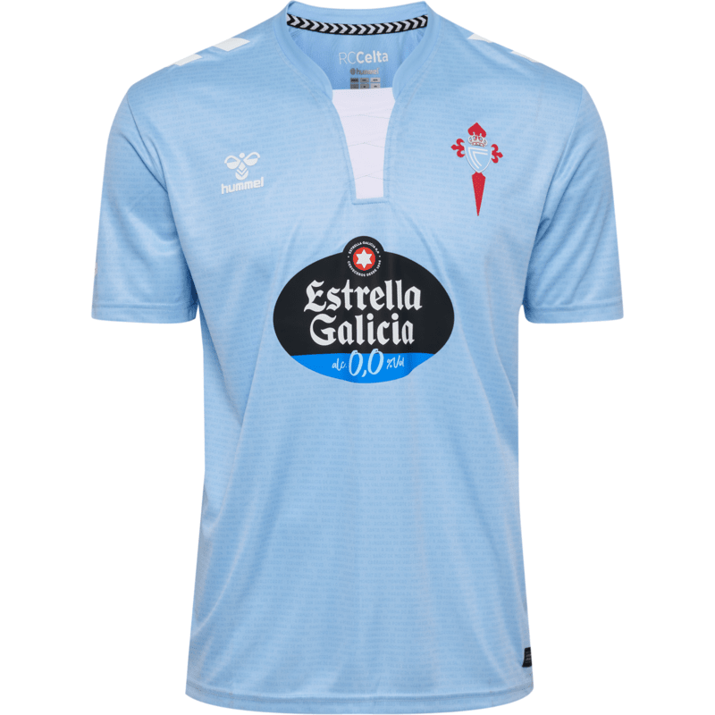

Camiseta del Celta de Vigo
La equipación más reciente del RC Celta de Vigo, confeccionada con tejido transpirable y un diseño emblemático para incondicionales del club.
Precio mínimo para la puja: 49,99€
La equipación más reciente del RC Celta de Vigo, confeccionada con tejido transpirable y un diseño emblemático para incondicionales del club.
Precio mínimo para la puja: 49,99€
Camiseta oficial de Tom Brady, diseñada para los verdaderos seguidores de la leyenda de la NFL. Confeccionada con materiales de alta calidad y un diseño exclusivo que rinde homenaje a su legado en el fútbol americano.
Precio mínimo para la puja: 209,99€

Jersey oficial de los Kansas City Chiefs en edición especial, con detalles únicos para los auténticos seguidores de la NFL.
Precio mínimo para la puja: 99,99€

Camiseta del mundial 2010 de españa. Dorsal a elegir disponible. ¡Viva España!
Precio mínimo para la puja: 79,99€
Camiseta oficial del Real Madrid, con tecnología Aeroready para ofrecer máxima frescura y comodidad en cada partido.
Precio mínimo para la puja: 24,99€

Camiseta legendaria de Kobe Bryant con los colores oficiales de Los Angeles Lakers. Un tributo a la Mamba Negra, ideal para coleccionistas y fanáticos de la NBA.
Precio mínimo para la puja: 149,99€

Versión retro del Valencia CF con toques clásicos, diseñada para rememorar los grandes éxitos del club.
Precio mínimo para la puja: 79,99€
Camiseta inspirada en la temporada 2000/01 de Allen Iverson, imprescindible para los seguidores del baloncesto clásico.
Precio mínimo para la puja: 109,99€